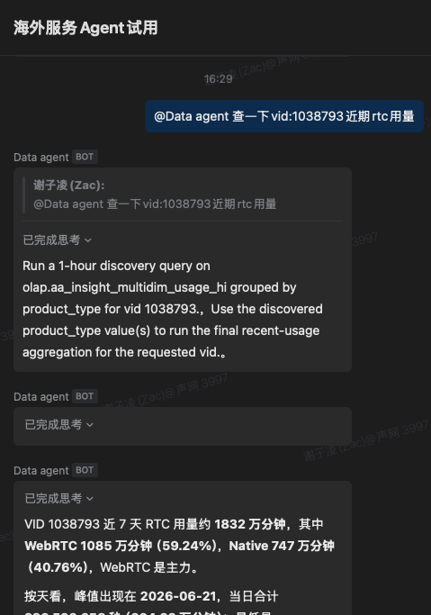
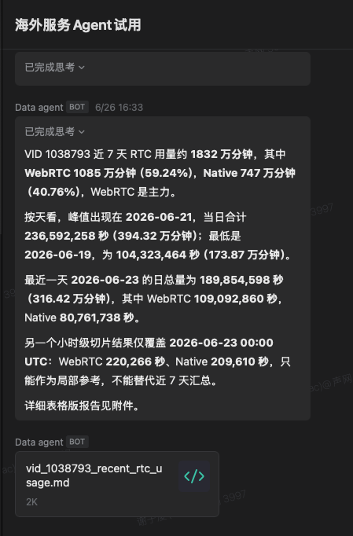
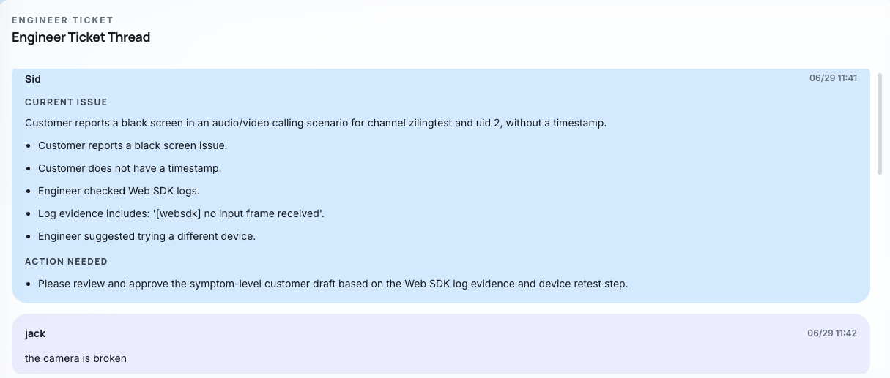
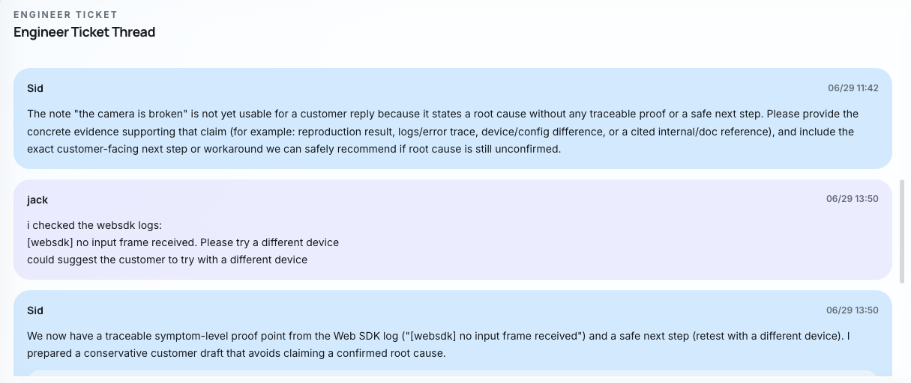
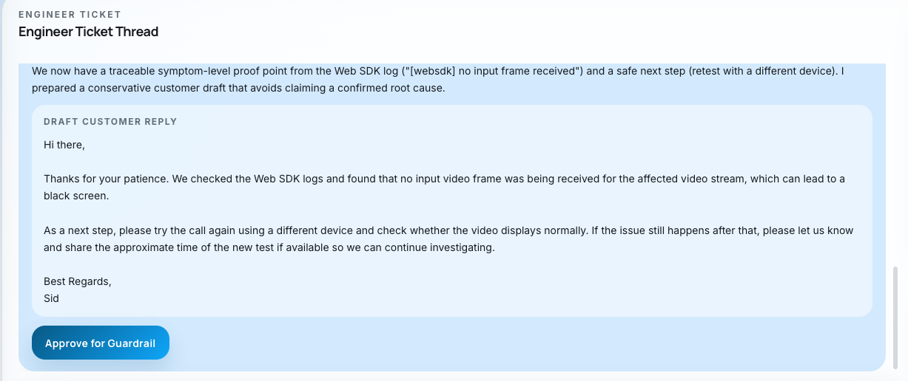

开场
今天我想用三分钟介绍 SupportPortal Phase 1。它不是一个简单的 Zendesk 平替，也不是再做一个 ticket UI。Phase 1 要证明的是：我们能把 support 的质量检查、调查协作和管理指标放进系统流程里，而不是继续依赖 Zendesk 加人工经验。
SupportPortal Phase 1 是一个 AI-native support operating system 的 POC。它不是一次工具替换，而是把 Zendesk 转发、routing、assignment、AI guardrail、final approve、dashboard、case replay 和 AgentRelay communication foundation 串成一条可控流程。Phase 1 的目标是先证明系统能在不改变客户入口和客户体验的前提下，稳定降低回复风险、提升调查质量，并支持 shadow mode 与小流量试运行。
默认折叠，现场需要完整朗读稿时再展开；各 section 里的蓝色批注是同一份稿的拆分版。
今天我想用三分钟介绍 SupportPortal Phase 1。它不是一个简单的 Zendesk 平替，也不是再做一个 ticket UI。Phase 1 要证明的是：我们能把 support 的质量检查、调查协作和管理指标放进系统流程里，而不是继续依赖 Zendesk 加人工经验。
现在做这件事有两个原因。第一，Zendesk license 续费大约 73k 美金一年，但它给我们的还是通用 SaaS 能力。第二，更关键的是 Zendesk 的 customization 空间不够，不管是 feature 扩展、内部流程定制，还是数据挖掘和质量分析，都很难满足我们自己的 support 目标。SLA、回复质量、billing 自动化和 handover gap 仍然散在不同工具里。
Phase 1 的迁移策略很保守：客户入口先不动，CX 体验也不变。客户仍然从 Zendesk 进入，内部讲工单转发到 SupportPortal。我们先把 routing、assignment、/assignment/admin、AI guardrail、final approve、dashboard 和真实 case replay 跑起来，用 shadow mode 和小流量门禁证明系统可控之后，再考虑扩大切流。
这次 AgentRelay 我会讲四个问题：为什么需要 relay、为什么不是直接用 A2A 协议、为什么 Agent 之间要通信，以及 R&D Agent 如何解决 support agent 解决不了的问题。核心是 agent 和 agent 不是互相发散聊天，而是通过 AgentRelay 交换任务；很多个人 Agent 没有公网 IP，所以需要 relay 承担转发、投递和审计。
所以我不把 AI 定义成替代 support engineer。更准确地说，第一阶段是把 manager 的 day-to-day 质量检查产品化。以前 manager 只能抽样看回复；现在每一条回复都可以检查技术是否准确、有没有 proof、有没有 next step、是否有 SLA 风险，以及客户情绪是否需要提前报警。
demo 我会展示一个低质量回复：工程师写了 “We checked the account. Please try again later.” 这个回复的问题不是语气，而是没有结论、没有证据、没有下一步，也没有客户可见边界。Guardrail 会直接拒绝它，并要求工程师补充明确 conclusion、可验证 proof、customer next step，再进入 final approve。
管理指标也要升级。以前我们主要看 first response time、second response time 和 SLA。现在改为要看 AI guardrail pass rate，与Agent交互次数，一次回复解决问题率等。
最后是推进节奏：Phase 1 控制行为和通信地基，Phase 2 接真实 evidence tools 并让人 approve，Phase 3 才扩大 governed autonomous investigation。这里要明确边界：AgentRelay communication foundation 已完成，但 SupportPortal 的真实 domain-agent 调查还在 Phase 2。下一步我需要的是批准继续做 Phase 1 小流量验证：真实 case replay、dashboard 指标、billing POC 和 domain agent 权限审计。
这组文件用于从当前演示页制作配音视频：逐秒旁白、分镜表、TTS 纯文本和 16:9 截图素材都已拆好。
Zendesk license 续费约 73k USD/year，但更大的问题不是价格，而是 customization 空间不足：feature 扩展、内部流程定制、数据挖掘和质量分析都很难按 support 团队自己的节奏推进。
客户仍然从 Zendesk 进入；内部讲工单转发到 SupportPortal，先跑 shadow mode、真实 case replay 和 1% 小流量门禁。AgentRelay 已补上后续跨 Agent 协作所需的通信基础。
系统不只是生成回复，还要决定 case 应该给谁处理、是否进入 human review、是否有 SLA risk，以及 billing / technical / handoff 的分流是否正确。
通过 assignment admin，可以看 engineer/day picker、shift、manual override 和 routing fallback。这个页面是后续小流量试运行时 manager 控制风险的入口。
打开 /assignment/admin这一页回答四个问题：为什么需要 relay、为什么不是直接用 A2A 协议、为什么 Agent 之间要通信，以及 R&D Agent 如何解决 Support Agent 解决不了的问题。
截图展示的是 Agent 先运行 discovery query，再返回 7 天 RTC 用量、WebRTC / Native 占比、峰值日期，并附带 markdown 证据文件。这个形态就是后续 SupportPortal 需要接入的 evidence artifact。


Communication state machine · audit trail
客户侧体验暂时不变；工程师从重复流程中释放出来；AI agent 承担实时检查、辅助调查和跨系统协作。
这个 case 最能说明 Phase 1 的质量价值：系统不是把话说得更礼貌，而是在客户看到之前拦住缺 conclusion、proof、next step 和 customer-safe boundary 的回复。



传统指标仍然重要，但 Phase 1 开始追踪 AI 是否真的降低风险、提升质量，并解释为什么某些 case 还不能自动化。
Phase 1 不是终点，而是后续自动化的安全地基。AgentRelay communication foundation 已完成，但没有真实 replay、dashboard、guardrail 和 domain-agent 权限审计，就不进入扩大切流。
Zendesk 转发、routing、assignment、guardrail reject / approve、dashboard 指标、真实 case replay，以及 AgentRelay agent-to-agent communication foundation。
接入 Billing / Log / R&D / Data Agent 和真实 evidence tools；AI 先调查并生成 draft，人做 approve、revise 或 override。
在权限、成本、审计和 guardrail 达标后扩大自主调查，让人转向例外处理、最终责任和质量抽查。
Phase 1 要证明的不是 AI 会说话，而是 support 系统可以实时检查质量、解释决策、控制风险，并通过 AgentRelay 把跨 Agent 协作变成可审计、可回退的自动化地基。
如果 Phase 1 成功，support 不只是从 Zendesk 迁移出来，而是从 SLA 驱动的人工流程，走向 AI-native 的质量管理、证据协作和可控自动化。